Café recién hecho
Café molido al momento y servido con calma: espresso, cortado, café con leche, capuchino y bebidas con leche vegetal a tu gusto.
Una cafetería cálida en el corazón del Bidasoa. Café recién hecho, desayunos de los de verdad, bollería y repostería para empezar el día o hacer un alto.
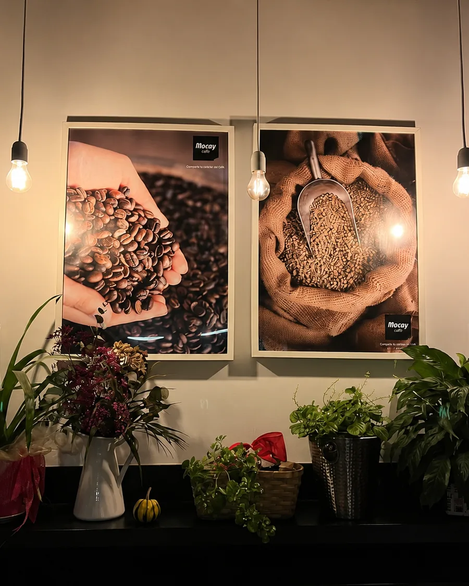
Entras del frío de la montaña y te recibe el olor del café recién hecho y de la bollería del día. En Sara Kafetegia cuidamos cada taza como si fuera para casa, con leche bien texturizada y dulces para acompañar.
Estamos en pleno centro de Bera, en el valle del Bidasoa, a un paso de Lesaka, Etxalar y la frontera con Francia. Un lugar tranquilo para desayunar, leer, charlar o hacer un alto en el camino.
Conoce nuestra historiaTres cosas en las que no transigimos: el café bien hecho, el dulce recién horneado y el trato de barra.
Café molido al momento y servido con calma: espresso, cortado, café con leche, capuchino y bebidas con leche vegetal a tu gusto.
Croissants, napolitanas, bizcochos y tartas para acompañar el café o merendar. Cada día, algo recién hecho esperándote en la vitrina.
Luz cálida, plantas, buena música y gente que se conoce. Un sitio donde te sientes en casa desde la primera visita.
Abrimos temprano y volvemos por la tarde. Estés como estés de tiempo, aquí cabe tu pausa.
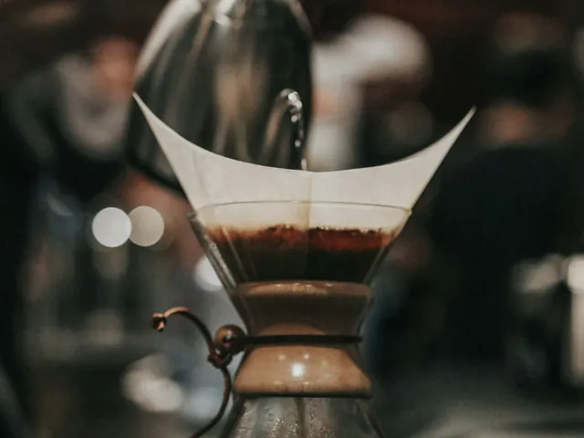
Café, zumo y tostada o bollería para arrancar el día con calma antes del trabajo o la ruta.
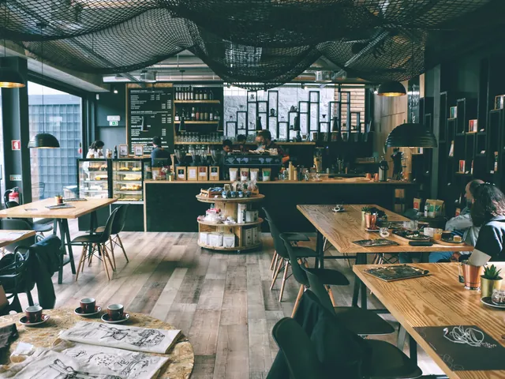
Ese alto a media mañana con un buen café y algo dulce. El descanso que se agradece.
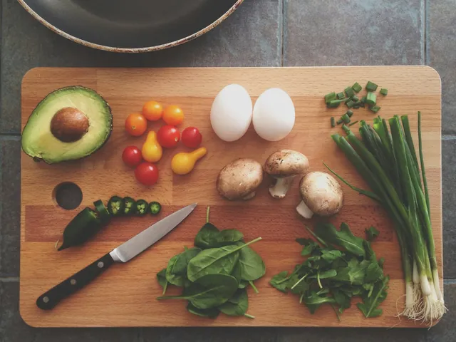
Por la tarde volvemos a abrir: chocolate, tartas y bollería para merendar en familia o con amigos.
Una pequeña muestra de lo que encontrarás. La carta completa, con precios, te espera dentro.
El café bueno no tiene secretos: tiene cuidado. Así lo preparamos cada día.
Cuidamos el café que ponemos en la máquina y lo guardamos como debe ser, para que cada taza salga como la primera.
Nada de café molido de víspera. Ajustamos el molino para sacar lo mejor del grano justo antes de servir.
Extracción cuidada, leche bien texturizada y un "que aproveche" de verdad. Lo bueno se disfruta sin prisa.
Un vistazo a lo que servimos y al lugar donde estamos. Toca cualquier foto para verla más grande.
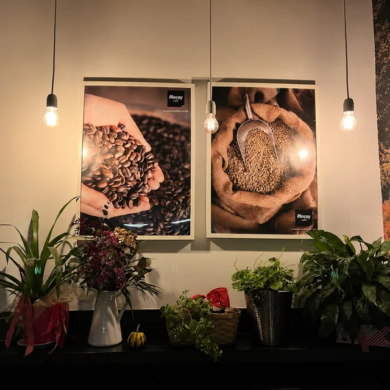
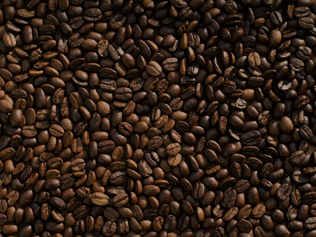
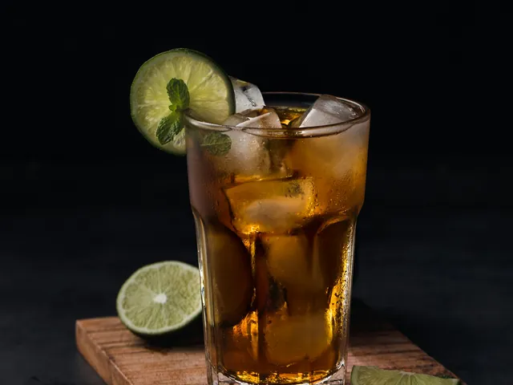
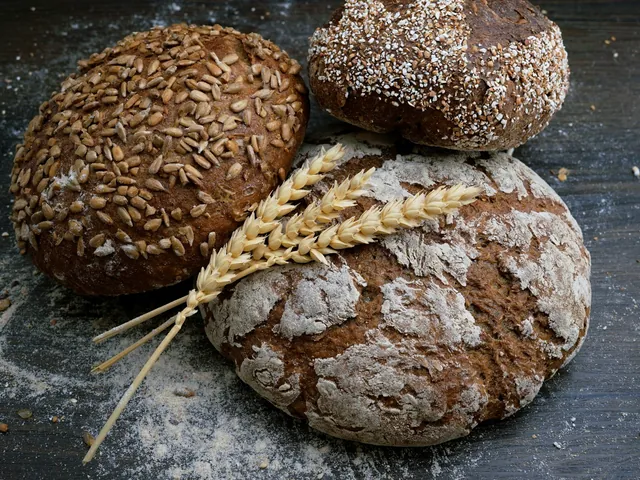
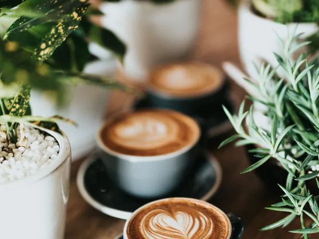
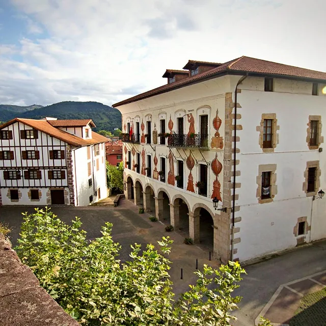
Valoración media de 4,3 sobre 5. Estas son algunas voces del día a día.
El café de la mañana antes de subir a Larun ya es tradición. Siempre bien hecho y el trato, inmejorable.
Paramos de camino a Francia y nos quedamos un buen rato. La bollería está riquísima y el sitio es muy acogedor.
Mi cafetería de confianza en el Bidasoa. Vengo desde Lesaka solo por su café con leche y un dulce.
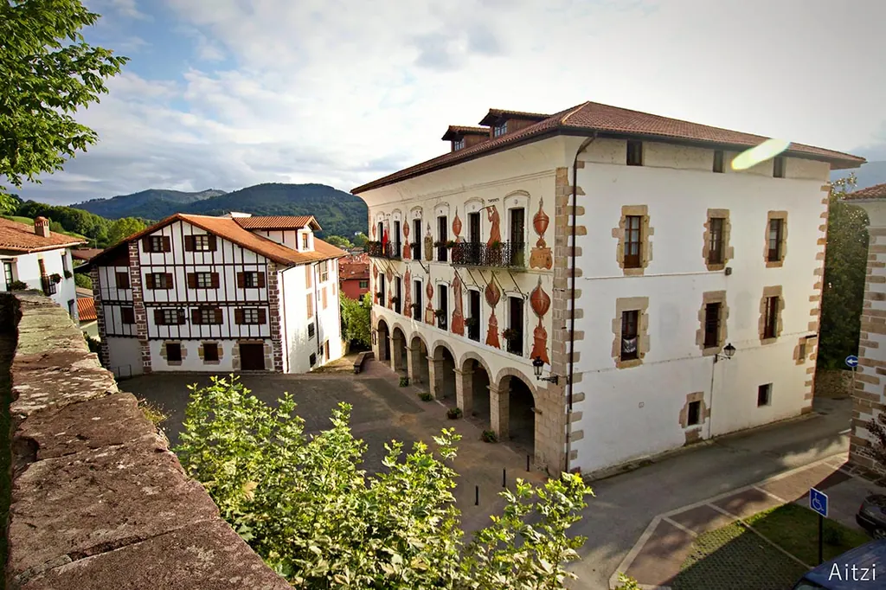
Bera es una de las Cinco Villas (Bortziriak), entre el río Bidasoa y la montaña, con Larun vigilando desde sus 905 metros y la frontera francesa a un paso. Un pueblo de casas de piedra, del órgano romántico de San Esteban y de la casa Itzea de los Baroja.
Estamos aquí, para los de Bera y para quien pasa: senderistas que bajan de Larun, viajeros camino de Francia y vecinos de Lesaka, Etxalar o Igantzi que se acercan a por su café.
Ver cómo llegarEstamos en Iturlandeta Karrika, 6, en el centro de Bera (Bera de Bidasoa), Navarra, en la comarca de Bortziriak. A pocos minutos de Lesaka, Etxalar e Igantzi, y muy cerca de la frontera con Francia.
Abrimos de lunes a viernes de 7:30 a 13:30 y de 17:00 a 20:30, y los fines de semana de 8:00 a 14:00 y de 17:00 a 20:30. Los desayunos están disponibles toda la mañana.
Café recién hecho (espresso, cortado, café con leche, capuchino), desayunos, bollería y repostería casera, además de tés, infusiones, refrescos y zumos. Tenemos opciones con leche vegetal.
Sí. Cada día tenemos croissants, napolitanas, bizcochos y dulces para acompañar el café, además de tartas y opciones para merendar. Pregunta en barra por lo recién hecho del día.
Sí, servimos café y desayunos para llevar durante todo el horario. Es habitual entre quien va de paso hacia Francia o sube al monte Larun.
Pásate a tomar un café, a desayunar o a merendar. La primera taza siempre sienta mejor sin prisa.